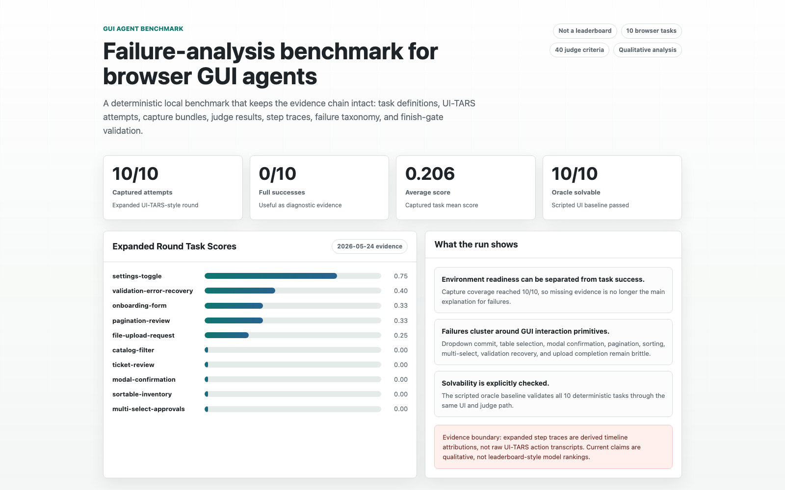

Reproducible GUI-agent failure analysis
GUI Agent Benchmark
A deterministic browser benchmark and evidence-chain workspace for studying where GUI agents fail at the primitive interaction level.

10/10
UI-TARS-style tasks captured
0/10
full end-to-end successes
0.206
average diagnostic score
40
judge criteria preserved
Evidence boundary: this release is a diagnostic failure-analysis harness, not a leaderboard claim. The expanded round has complete capture coverage, while historical step traces remain derived timeline attributions rather than raw UI-TARS action transcripts.